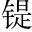

秦孝公據殽函之固，擁雍州之地，君臣固守，以窺周室殽，山名，謂二殽。函，函谷關也。擁，亦據也。雍州，今陝西。固守，堅守其地也。周室，天子之國，秦欲窺而取之。。有席捲捲。天下、包舉宇內、囊括四海之意，併吞八荒之心括，結囊也。八荒，八方也。○四句只一意，而必疊寫之者，蓋極言秦有虎狼之心，非一辭而足也。。當是時也，商君衛鞅。佐之，內立法度，務耕織，修守戰之具；外連衡橫。而鬥諸侯連六國以事秦，而使之自相攻鬥。。於是秦人拱手而取西河之外拱手而取，言易也。西河，魏地名。○秦之始強如此。。
孝公既沒，惠文、武、昭孝公卒，子惠文王立；卒，子武王立；卒，立異母弟，是昭襄王也。蒙故業、因遺策，南取漢中，西舉巴蜀，東割膏腴之地，收要害之郡漢中、巴、蜀三郡，並屬益州。膏腴，土田良沃也。要害，山川險阻也。○秦之又強如此。。諸侯恐懼，會盟而謀弱秦，不愛珍器、重寶、肥饒之地，以致天下之士，合從宗。締交，相與為一以一離六為衡，以六攻一為從，故衡曰連，從曰合。締，結也。○正欲寫秦之強，忽寫諸侯作反襯。。當此之時，齊有孟嘗田文。，趙有平原趙勝。，楚有春申黃歇。，魏有信陵無忌。。此四君者，皆明智而忠信，寬厚而愛人，尊賢而重士極贊四君，以反襯秦之強。，約從離橫，兼韓、魏、燕、趙、宋、衛、中山之眾。於是六國之士，有甯越趙人。、徐尚未詳。、蘇秦洛陽人。、杜赫周人。之屬為之謀，齊明東周臣。、周最周君子。、陳軫秦臣。、召邵。滑依。○楚臣。、樓緩魏相。、翟景未詳。、蘇厲蘇秦弟。、樂毅燕臣。之徒通其意，吳起魏將。、孫臏頻上聲。○孫武之後。、帶佗駝。○未詳。、兒倪。良、王廖留。○《呂氏春秋》曰：「王廖貴先，兒良貴後。」此二人者，皆天下之豪士也。、田忌齊將。、廉頗、趙奢皆趙將。之倫制其兵此段申明「以致天下之士」一句，極寫諸侯得人之盛，以反襯秦之強。。嘗以什倍之地，百萬之眾，叩關而攻秦叩，擊也。關，函谷關。○此正接前「合從締交，相與為一」句，作一逼，緊陗。。秦人開關而延敵，九國之師遁逃而不敢進。秦無亡矢遺鏃族。之費，而天下諸侯已困矣九國，謂齊、楚、韓、魏、燕、趙、宋、衛、中山也。鏃，箭鏑也。○上寫諸侯謀弱秦，何等忙；此寫秦人困諸侯，何等閒。。於是從散約解，爭割地而賂秦初點連衡，次點合從，三敘約從離橫，四敘從散約解，段落井然。。秦有餘力而制其弊，追亡逐北，伏屍百萬，流血漂櫓軍敗曰北。櫓，大楯也。。因利乘便，宰割天下，分裂河山。強國請服，弱國入朝極言秦之強，總是反跌下文。。
施及孝文王、莊襄王昭襄王卒，子孝文王立；卒，子莊襄王立。，享國之日淺，國家無事虛敘帶過。。
及至始皇方說到始皇。，奮六世之餘烈六世，孝公、惠文王、武王、昭王、孝文王、莊襄王。，振長策而御宇內，吞二週而亡諸侯，履至尊而制六合，執敲撲以鞭笞天下振，舉也。策，馬箠也。振長策，以馬喻也。二週，東、西周也。履至尊，踐帝位也。六合，天地四方也。敲撲，皆杖也。短曰敲，長曰撲。○四句亦只一意，極言始皇之強，非一辭而足也。，威振四海。南取百越之地，以為桂林、象郡百越，非一種也。桂林，今鬱林。象郡，今日南。，百越之君俛同「俯」。首繫頸，委命下吏言任性命於獄官也。○極寫始皇之強。。乃使蒙恬秦將。北築長城而守藩籬，卻匈奴七百餘裡，胡人不敢南下而牧馬，士不敢彎弓而報怨極寫始皇之強。○前歷言秦之強，以其善攻，以下言始皇不善守。。於是廢先王之道，燔百家之言，以愚黔首燔，燒也。百家言，經、史之類。黔，黑也。秦謂民為黔首，以其頭黑也。。隳灰。名城，殺豪俊，收天下之兵聚之咸陽，銷鋒的。，鑄以為金人十二，以弱天下之民隳，毀也。兵，戎器也。咸陽，秦都。鋒。然後踐華為城，因河為池，兵刃也。始皇銷鋒，據億丈之城，臨不測之溪以為固，為金人十二，重各千石，置宮庭中。○始皇愚民、弱民，適所以自愚、自弱，伏末「仁義不施而攻守之勢異」一句。。良將勁弩，守要害之處；信臣精卒，陳利兵而誰何斷華山為城，因河水為池。。天下已定，始皇之心，自以為關中之固，金城千里，子孫帝王萬世之業也疊上兩句。。始皇既沒，餘威震於殊俗何，問也。誰何，言誰敢問。○極形容始皇之強盛，比從前更自不同。。
然而二字一篇大轉關。陳涉，甕牖繩樞之子，氓隸之人，而遷徙之徒也陳勝，字涉，陽城人。秦二世元年秋，陳涉等起。甕牖，以敗甕口為牖也。繩樞，以繩系戶樞也。氓隸，賤稱。遷徙之徒，謂涉為戍漁陽之徒也。，材能不及中庸不及中等庸人。，非有仲尼、墨翟之賢，陶朱、猗頓之富范蠡之陶，自謂陶朱公，治產積十九年之間，三致千金。猗頓聞朱公富，往問術，十年間，資擬王公。故富稱陶朱、猗頓。○陳涉既非其人，又無其資。，躡足行伍之間，俛同「勉」。起阡陌之中，率罷同「疲」。弊之卒，將數百之眾俛起，不得已而舉事也。阡陌，道路也。○不成軍旅。，轉而攻秦。斬木為兵，揭傑。竿為旗揭，高舉也。斬木為兵，而無鋒刃，舉竿為旗，而無旌旛。○不成器仗。，天下雲集而響應，贏糧而景同「影」。從，山東豪俊遂並起而亡秦族矣雲集響應，如雲之集，如響之應也。贏，擔也。景從，如影之隨形也。○前寫諸侯如彼難，此寫陳涉如此易，反照作章法。。
且夫轉筆會全神。天下非小弱也，雍州之地，殽函之固，自若也；陳涉之位，不尊於齊、楚、燕、趙、韓、魏、宋、衛、中山之君也；鋤耰、棘同「戟」。矜同「，不銛」。音芹。於鉤、戟、長鎩仙。也晒。；謫戍之眾，非抗於九國之師也耰，鋤柄。矜，矛柄。銛，利也。鎩，長矛。；深謀遠慮，行軍用兵之道，非及曩時之士也涉謫戍漁陽。抗，敵也。。然而成敗異變，功業相反曩時，六國之士。○總承前文，兩兩比較，句法變換，最耐尋味。。試使山東之國與陳涉度長絜大，比權量力，則不可同年而語矣略作一頓。。然秦以區區之地，致萬乘之權，招八州而朝同列，百有餘年矣疊上意又作一颺，文勢愈緊。。然後以六合為家，殽函為宮。一夫作難招，舉也。九州之數，秦有雍州，餘八州，皆諸侯之地。○收前半篇。而七廟隳，身死人手，為天下笑者陳涉為首倡。，何也？仁義不施，而攻守之勢異也死人手，謂秦王子嬰為項羽所殺。○收後半篇。。
《過秦論》者，論秦之過也。秦過只是末「仁義不施」一句便斷盡，從前竟不說出。層次敲擊，筆筆放鬆，正筆筆鞭緊，波瀾層折，姿態橫生，使讀者有一唱三嘆之致。